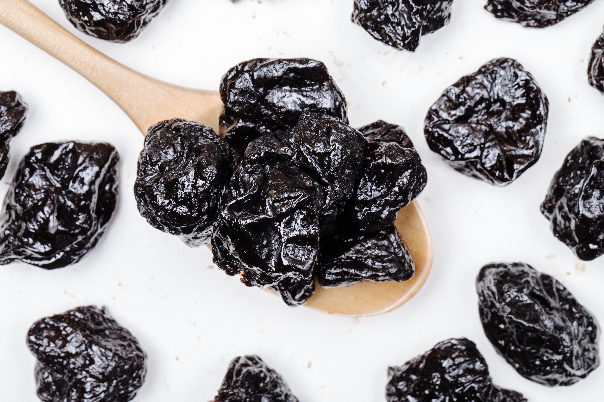

La ciruela deshidratada se ha consolidado como uno de los productos estrella de la agroindustria chilena. Según datos de la industria recogidos por medios especializados, entre enero y octubre de 2025 las exportaciones chilenas superaron las 75.800 toneladas por cerca de US$ 247 millones, una cifra que confirma la fortaleza del sector tras un 2024 que cerró en torno a las 88.900 toneladas y los US$ 255 millones.

Chile, el referente mundial de la ciruela deshidratada
Chile representa cerca del 38% de las exportaciones mundiales de ciruela deshidratada, lo que lo mantiene como el principal proveedor del planeta. Detrás de este liderazgo hay condiciones agroclimáticas privilegiadas en los valles de la zona central, una industria procesadora madura y un gremio articulado: Chileprunes, la asociación que reúne a más del 70% de las exportaciones del rubro.
China lidera los destinos, pero el mapa se diversifica
China continúa siendo el principal mercado de la ciruela deshidratada chilena: en lo que va de 2025 importó cerca de 24 mil toneladas por unos US$ 67 millones, alrededor de un tercio del volumen total. La demanda del consumidor chino por snacks saludables sigue impulsando estos envíos.
Al mismo tiempo, la industria muestra una clara tendencia a la diversificación: solo en el primer trimestre de 2025 los envíos llegaron a 48 países, y mercados emergentes como India aparecen como apuestas de mediano plazo. Esta apertura reduce la dependencia de un solo destino y abre oportunidades para nuevos compradores en Asia, Europa y América.
Una industria que mira hacia 2030
Las proyecciones del sector anticipan un aumento cercano al 20% en la oferta entre 2025 y 2030, impulsado por nuevas plantaciones y la renovación de huertos. Es decir, habrá más volumen disponible y, con él, mayor necesidad de canales comerciales sólidos, trazabilidad y cumplimiento de los estándares de cada mercado de destino.
La mirada de Prunavita
Estas cifras confirman algo que vemos a diario: la ciruela deshidratada chilena es un producto con demanda global y proyección de crecimiento. Para un comprador internacional, el desafío no es encontrar volumen, sino asegurar calidad consistente, trazabilidad y un socio confiable en origen que garantice cada embarque. Y para el productor, la oportunidad está en llegar a más mercados cumpliendo sus exigencias técnicas y documentales.
En Prunavita acompañamos ambos lados de esa ecuación: somos proveedores de ciruelas deshidratadas premium, gestionamos la exportación integral con toda su documentación, y para los compradores extranjeros —especialmente de China y Asia— ofrecemos representación comercial en Chile para sourcing, control de calidad y supervisión de embarques.
Fuentes consultadas: Portalfrutícola, FreshFruitPortal y Redagrícola (datos de la industria y Chileprunes, 2024–2025). Análisis y redacción: equipo Prunavita.